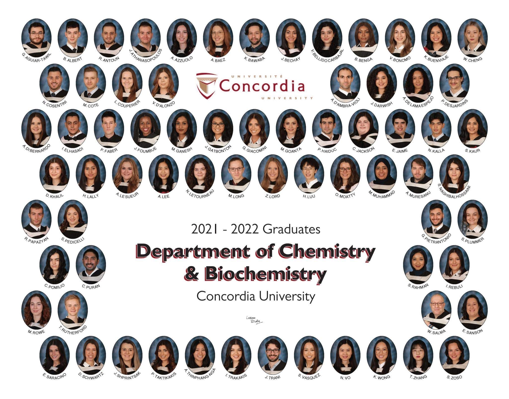
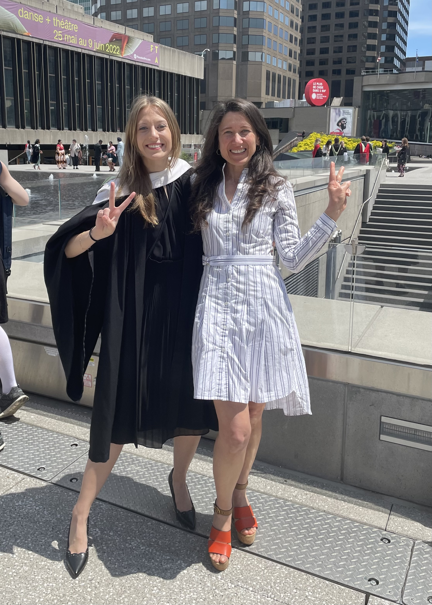
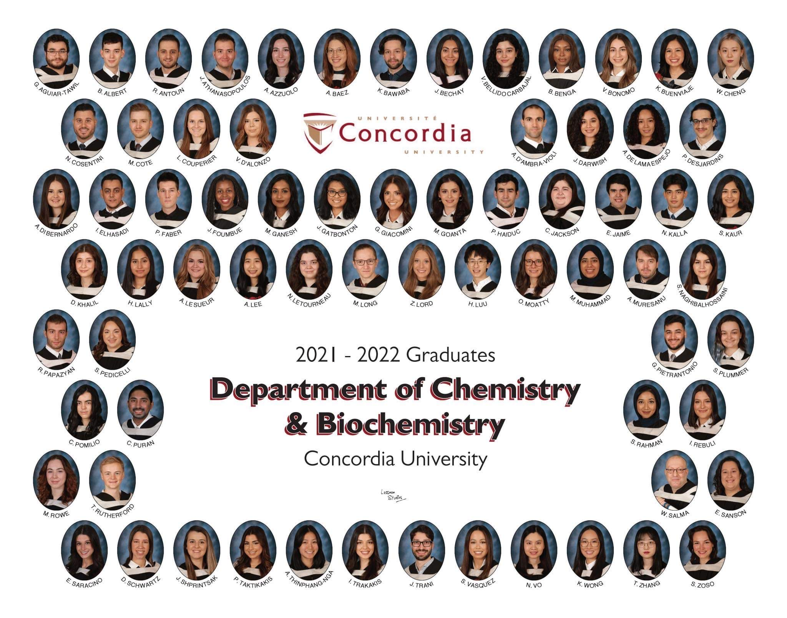
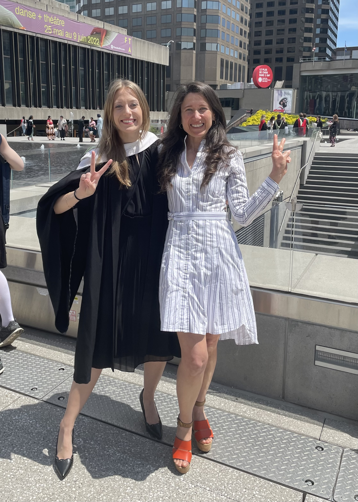
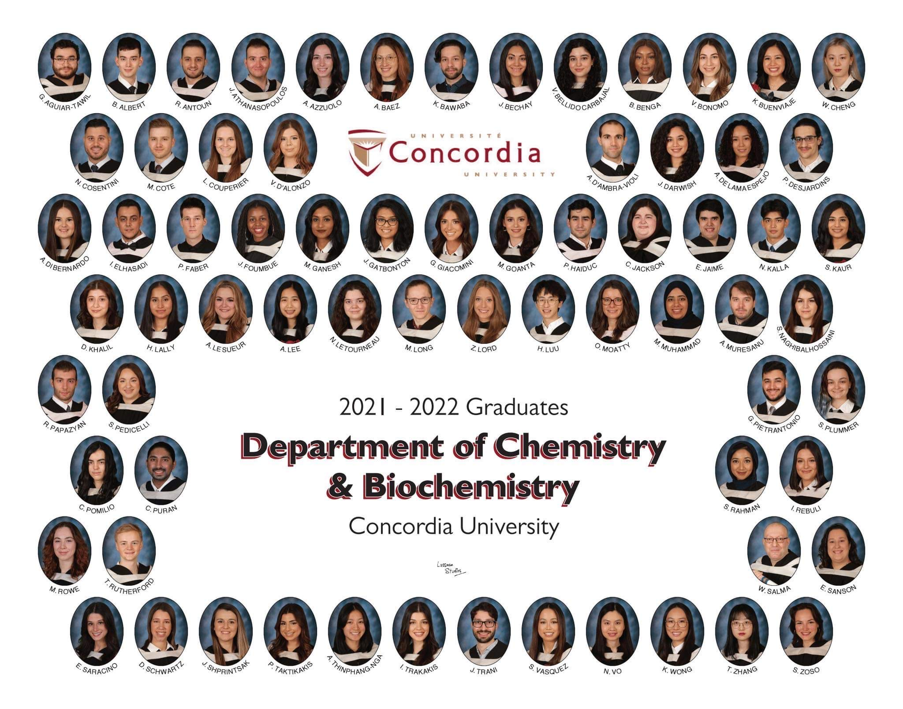
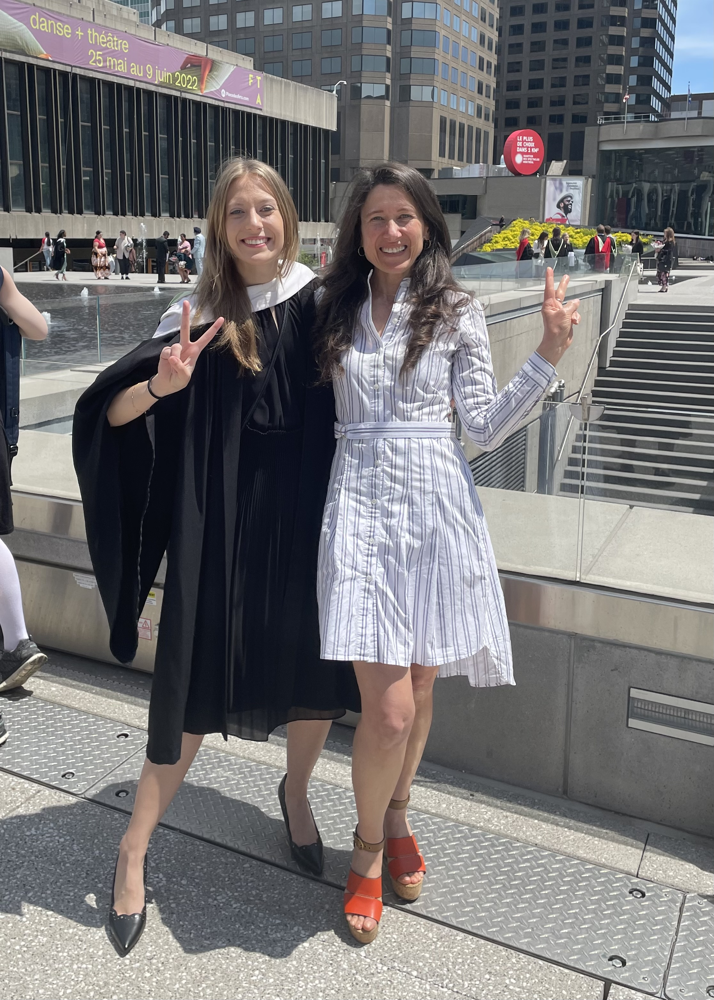

This is the face of one happy gal that completed not only 1, but 2 Bachelors of Science!
Yesterday I ended my 6-year long chapter at Concordia University.
The graduation ceremony held at Place-des-Arts was nothing short of beautiful; to be surrounded and cheered-on by my Chemistry classmates as we all had our special moment on-stage.
I am also blessed to be one of the few graduates in the crowd with the opportunity to attend the very last ceremony before the pandemic in November 2019, and the first back-in-person ceremony in May 2022.
In 2019, I completed my first BSc. in Behavioral Neuroscience (Psychology).
Exploring my deep passions for the health sciences, I decided to return for a second BSc. in Chemistry with a Minor in Biology — however this time around I managed to be awarded with Distinction honors.
My classmates often joke that I've enrolled in every class offered at the Loyola Campus!
But between you and me, I enjoyed every minute of it.
Concordia University has given me too many opportunities to grow into the woman I am today and exercise my strong fascination for space medicine.
I have only true excitement for my upcoming chapter at Queen's University as I continue to dedicate my endeavors down the path of academia.

